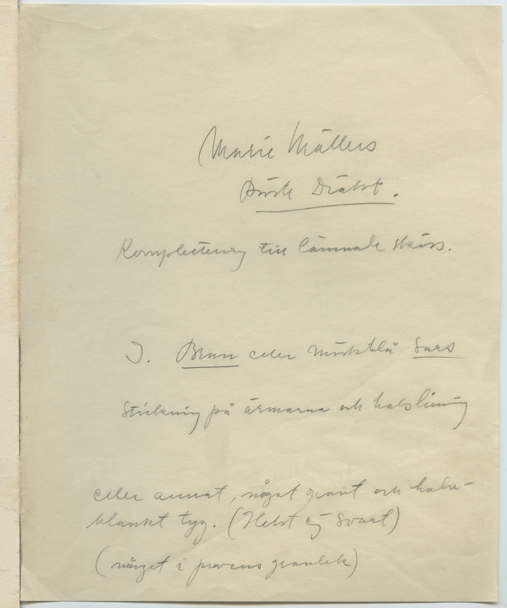

Marie Möllers bäste dräkt - försättsblad och kostymskiss
Denna skiss är försedd med ett försättsblad, se vänster. Scrolla ned för zoom av kostymskissen samt metadata för båda bilderna. Fungerar inte zoom-funktionen? Testa att ladda om sidan.

Metadata Försättsblad
Objekttyp
Försättsblad till Kostymdesignskiss
Titel
Marie Möllers bäste dräkt (försättsblad)
Kreation
Kreatör
Max Linder
Roll
Filmarkitekt
Produktion
Livet på landet (1943)
Produktionsnummer
F.731
Getty AAT
conceptual drawings; sketches; costume design; pencil drawings; handwriting
Svenska Ämnesord
Kostymer; Scenografi; Film--historia; Filmproduktion; Bearbetningar för film; Komedier (film); Herrgårdsliv i filmen; Lantliv i filmen; Sverige
Material och teknik
Handskrift på papper
Mått
180 × 224 mm
Beskrivning
Försättsblad som är limmat med kostymskiss i vänster kant.. Handskriven text i grafit. Texten transkriberad och tolkad som: ”Marie Möllers Bäste Dräkt. Komplettering till lämnad skiss. I. Brun eller mörkblå [otydbart] Stickning på ärmarna och halslinning eller annat, något [otydbart] och halvblankt tyg. (Helst ej svart) (något i [otydbart] [otydbart])” Gulnat tunt papper.
Nuvarande plats
Svenska Filminstitutets arkiv
Upphovsrätt
Svenska Filminstitutet
Beskrivningsskrivare
Iris Landar Lygren, Ellinor Romin, Maria Eilersen

Metadata kostymdesignskiss
Objekttyp
Kostymdesignskiss
Titel
Marie Möller Bäste Dräkten
Kreation
Kreatör
Max Linder
Roll
Filmarkitekt
Produktion
Livet på landet (1943)
Produktionsnummer
F.731
Getty AAT
conceptual drawings; sketches; costume design; pencil drawings; art paper
Svenska Ämnesord
Kostymer; Scenografi; Film--historia; Filmproduktion; Bearbetningar för film; Komedier (film); Herrgårdsliv i filmen; Lantliv i filmen; Sverige
Material och teknik
Grafit och färgpenna på papper
Mått
200 × 248 mm
Beskrivning
Kostymskiss i grafit och svart färgpenna. Mörk klänning med markerad midja, ljus sjal över axlar. Skor sticker fram under klänningen. Figuren håller ut båda armarna. Titel och produktionsnummer i grafit. Ingen signatur.
Nuvarande plats
Svenska Filminstitutets arkiv
Upphovsrätt
© AB Svensk Filmindustri
Beskrivningsskrivare
Iris Landar Lygren, Ellinor Romin, Maria Eilersen